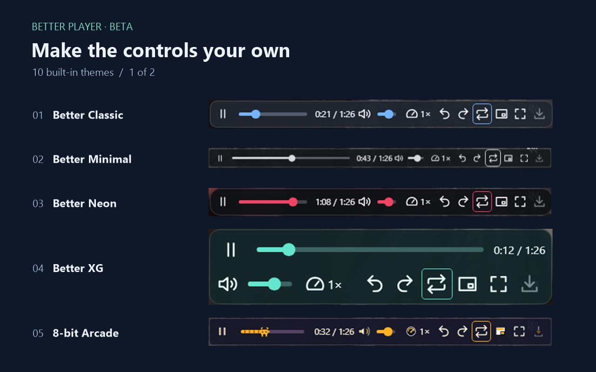
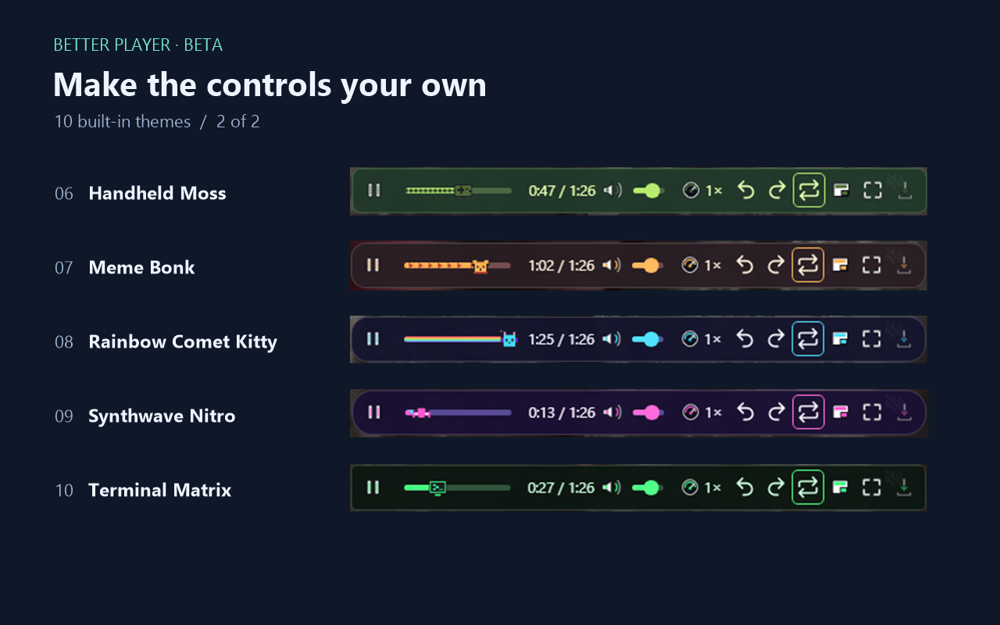

Take control of Instagram videos.
Adjust playback speed and volume, jump along the timeline, and loop sections with controls built into the video.

Features
Playback
Adjust speed, volume, playback position, and A–B looping. Use full screen or picture-in-picture where available.
Customization
Choose from 10 themes and set how long the controls stay visible.
Optional saving
Download compatible videos or record clips locally where the browser allows it.
Themes


Where to install
Desktop
The browsers below support installation through the store. Better Player has been tested on Chrome and Edge on Windows.
Android
Vivaldi and Yandex Browser document store installation on Android. Better Player still needs testing in these mobile browsers. In Vivaldi, enable Desktop Site.
Firefox and Safari use separate distribution channels. The Firefox edition is in testing.
Support
After installing, open Instagram in your browser. Click the Better Player icon to configure the controls. For support, include your browser, version, and steps to reproduce the problem.
GitHub Issues